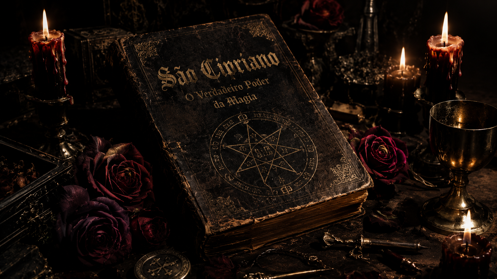
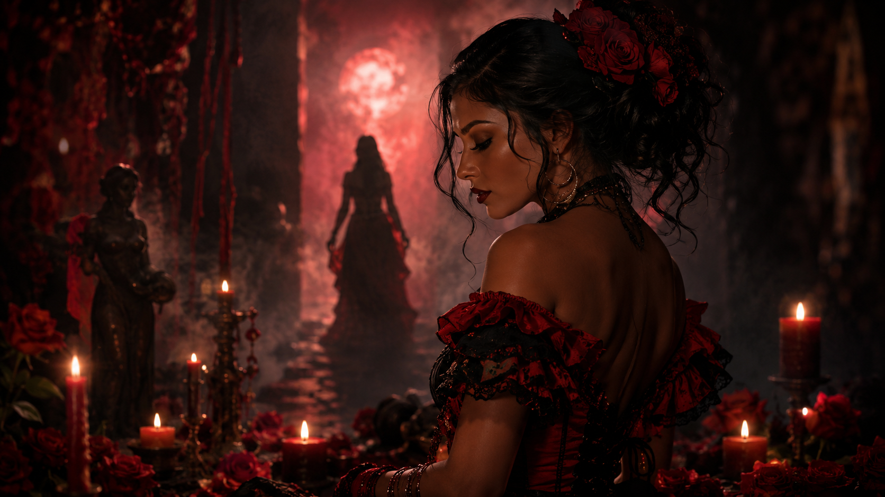

Axé
Força vital, energia sagrada que permeia tudo. Axé é o poder espiritual que mantém o equilÃbrio do universo e dos seres. É a centelha divina presente nas pedras, nas águas, nas folhas, no sangue, no som do atabaque e no silêncio da prece.
Nos terreiros, o axé é transmitido através de rituais, cantos, danças, oferendas e toques sagrados. Ele não se explica — se sente, se incorpora, se vive. Ter axé significa estar em harmonia com o divino, com a natureza e com o próprio destino. É a diferença entre existir e florescer.
Curiosidade: A saudação "Axé!" é usada como cumprimento, bênção e afirmação de presença espiritual. É como dizer: "Que a força vital esteja com você."
Energia Vital • Sagrado • EquilÃbrio • AncestralidadeOrixá
Divindades que representam forças da natureza e aspectos humanos. Cada Orixá rege um elemento e uma gama de caracterÃsticas: Ogum (guerra, tecnologia, justiça), Iemanjá (mares, maternidade, proteção), Oxalá (criação, paz, sabedoria), Xangô (justiça, raios, fogo), Oxum (amor, riqueza, água doce), Iansã (ventos, tempestades, transformação).
Divindades • Natureza • Elementos • MitologiaMédium
IndivÃduo que serve de ponte entre o plano fÃsico e espiritual. O médium é como uma ponte viva — um canal que se abre para que entidades como Pombagiras, Exus, Caboclos, Pretos-Velhos e Crianças possam transitar e atuar em auxÃlio da humanidade.
Além da incorporação, o médium pode desenvolver outras faculdades como vidência (ver além da matéria), psicofonia (falar com a voz do espÃrito), psicografia (escrever sob comando espiritual) e cura espiritual (passes, imposição de mãos, energizações).
Incorporação • Vidência • Psicofonia • CuraPonto Riscado
Desenho sagrado feito com pemba (giz de carvão ou calcário) para invocar, identificar ou firmar entidades. Cada Pombagira, Exu, Caboclo ou Preto-Velho tem seu ponto riscado especÃfico, que funciona como sua "assinatura energética". O conhecimento dos pontos é tradicionalmente passado de geração em geração dentro dos terreiros.
Pemba • Assinatura Sagrada • Invocação • MagiaTronqueira
Local fÃsico ou energético onde Exus e Pombagiras atuam com mais intensidade. Geralmente representado por encruzilhadas, entradas de cemitérios, portas de terreiros ou locais de grande circulação humana. A tronqueira é o "escritório espiritual" onde essas entidades recebem demandas, firmam trabalhos e realizam justiça.
Encruzilhada • Poder • Local de ForçaAtabaque
Tambor principal da curimba, instrumento sagrado que marca o ritmo dos pontos cantados e chama as entidades. Feito de madeira e couro animal, o atabaque tem seu som considerado uma oferenda sonora que abre os portais espirituais. Cada toque (rum, rumpi, lé) tem uma função especÃfica dentro do ritual.
Curimba • Pontos Cantados • Ritual • MúsicaAruanda
Plano espiritual superior de luz e paz, onde residem entidades de alta evolução. Na Umbanda, Aruanda é a pátria espiritual, o reino de Oxalá. Muitos Guias, Caboclos e Pretos-Velhos vêm de Aruanda para auxiliar na Terra. Não é um lugar fÃsico, mas uma vibração de amor, caridade e sabedoria.
Plano Espiritual • Luz • Paz • OxaláEgrégora
Campo energético coletivo formado por pensamentos e crenças de um grupo, que identifica seus membros. No terreiro, a egrégora é alimentada pelos rituais, pela fé e pela união da comunidade. Uma egrégora forte protege o ambiente e potencializa os trabalhos espirituais.
Energia Coletiva • Campo Mental • FéMandinga
Conhecimento ancestral e prático de magia e proteção. No contexto sagrado, trata-se da arte de manusear forças espirituais, ervas, rezas e pontos riscados para defesa, abertura de caminhos e justiça. Não tem conotação negativa: é a sabedoria do quilombo, do terreiro, do povo de rua.
Magia • Proteção • Sabedoria AncestralGira
Sessão espiritual realizada em terreiros onde ocorre a incorporação das entidades. Nas giras, Exus, Pombagiras, Caboclos, Pretos-Velhos e demais Guias descem para atender consulentes, dar passes, aconselhar e realizar trabalhos espirituais. Pode ser classificada em diferentes tipos: gira de esquerda (Exus e Pombagiras), gira de direita (Caboclos e Pretos-Velhos), gira de desenvolvimento (iniciantes) e gira de cura.
Sessão • Incorporação • Terreiro • Trabalho EspiritualCaboclo
Entidade que representa o espÃrito de indÃgenas brasileiros ancestrais. São guerreiros, curadores e sábios da mata. Trabalham com ervas, fumo, flechas e forças da natureza. Os Caboclos são considerados a linha de "direita" na Umbanda, atuando na cura, no desmanche de demandas e na conexão com a energia da terra.
IndÃgena • Mata • Cura • ErvasPreto-Velho
Entidade que representa os espÃritos de antigos escravizados africanos no Brasil. São figuras de profunda sabedoria, humildade e paciência. Trabalham com rezas, café, cachimbo e bengalas. Os Pretos-Velhos atuam na linha da caridade, do aconselhamento fraterno e da cura de feridas emocionais profundas.
Ancestralidade • Sabedoria • Cachimbo • CuraCriança (Erê)
Entidade que representa a energia lúdica, alegre e descompromissada da infância. São espÃritos de crianças desencarnadas ou a própria energia de pureza e renovação. Trabalham com brinquedos, doces, balões e cores vibrantes. Os Erês trazem leveza, quebram demandas pesadas e ensinam o valor da simplicidade e da alegria.
Alegria • Pureza • Leveza • RenovaçãoCigano
Entidade que trabalha com a energia da liberdade, prosperidade e magia cigana. Podem ser homens ou mulheres (ciganos e ciganas). Utilizam baralhos, lenços, moedas, vinho tinto e rosas. Regem sorte, viagens, negócios, relacionamentos e a arte de "ler o destino" por meio da vidência.
Liberdade • Prosperidade • Baralho • MagiaCurimba
Conjunto de músicos e cantadores que tocam os atabaques e entoam os pontos durante as giras. A curimba é responsável por manter a energia do terreiro, chamar as entidades e sustentar a vibração do trabalho espiritual. Os pontos cantados são verdadeiros mantras que abrem portais e facilitam a incorporação.
Música • Pontos Cantados • Atabaque • RitualPemba
Giz ou carvão sagrado utilizado para riscar pontos no chão, em lajotas ou em objetos de rituais. A pemba pode ser de calcário (branca) para trabalhos de luz, ou de carvão (preta) para demandas mais pesadas ou para riscar pontos de Exu e Pombagira. É consagrada com rezas, defumações antes do uso.
Giz Sagrado • Pontos Riscados • ConsagraçãoDespacho
Oferenda ou trabalho espiritual deixada em local de força (encruzilhada, mata, cachoeira, cemitério). O despacho pode ser uma simples oferenda de gratidão ou um trabalho complexo com diversos elementos. Deve ser feito com conhecimento e respeito, sob orientação de um pai ou mãe de santo. Jamais se deve mexer em despachos alheios.
Oferenda • Trabalho Espiritual • Local de ForçaAmaci
Banho de ervas sagradas utilizado para limpeza espiritual, fortalecimento e iniciação de novos médiuns. Cada amaci é preparado com ervas especÃficas conforme o Orixá, a entidade ou a finalidade (abertura de caminhos, proteção, cura). É um ritual de "nascimento" espiritual no candomblé e na umbanda.
Banho • Ervas • Limpeza • IniciaçãoCalunga
Termo de origem bantu que designa o cemitério, o oceano (calunga grande) ou o próprio espÃrito que trabalha nesses locais. Na Quimbanda, a calunga é o campo de força da morte simbólica, da transmutação, da justiça espiritual e do resgate de almas. Pombagiras como Rosa Caveira e Exus Caveira são especialistas em trabalhos na calunga.
Cemitério • Transmutação • Justiça • MorteCambono
Assistente ou auxiliar de médium dentro do terreiro, que dá suporte durante as giras e incorporações. O cambono ajuda o médium incorporado a receber consulentes, anota os recados das entidades, cuida da parte prática (acender velas, entregar oferendas) e protege o médium de ataques espirituais.
Assistente • Auxiliar • Terreiro • ProteçãoBúzios (Jogo de)
Oráculo africano utilizado no Candomblé e, em algumas casas de Umbanda, para consultar os Orixás. O jogo de búzios (Ifá ou Dilogum) é feito por um Babalaô ou Ialorixá, que interpreta os padrões formados pelos búzios lançados. Revela o Orixá regente da pessoa, problemas espirituais, orientações de caminho e possÃveis demandas.
Oráculo • Consulta • Orixás • DestinoFolhas Sagradas (Ervas)
Elemento fundamental nos rituais de Umbanda, Quimbanda e Candomblé. Cada erva tem sua função e energia: arruda (proteção), guiné (abre caminhos), alecrim (limpeza), manjericão (amor), eucalipto (cura), espada de São Jorge (corte de demandas), entre muitas outras. As folhas são colhidas com rezas e licença espiritual.
Ervas • Proteção • Cura • LimpezaAgô
Saudação e pedido de licença em iorubá. Pronunciada como "Agoô" ou "Agô", é utilizada ao entrar no terreiro, antes de falar com uma entidade ou realizar qualquer ritual. Significa reconhecimento da hierarquia espiritual e respeito aos mais velhos e às forças sagradas. "Agô, meu pai!", "Agô, minha mãe!"
Saudação • Respeito • Licença • HierarquiaPadê
Oferenda ritualÃstica oferecida a Exu e Pombagira antes de grandes trabalhos ou festas. Composta geralmente por farofa de azeite de dendê, camarão seco, cebola, ovos e outros alimentos. É depositada na encruzilhada ou na tronqueira do terreiro. O padê "abre os caminhos", pacifica a energia do local e pede proteção para o evento.
Oferenda • Exu • Pombagira • AberturaTerreiro
Casa ou espaço fÃsico onde são realizados os rituais de Umbanda, Quimbanda e Candomblé. Também chamado de "ilê" ou "roça". O terreiro é um local sagrado, onde estão assentadas as forças dos Orixás, Exus e Guias. Cada terreiro tem sua hierarquia, tradição e fundamentos especÃficos, transmitidos pelo pai ou mãe de santo.
Casa • Templo • Comunidade • HierarquiaBabalorixá
Sacerdote responsável por um terreiro de Candomblé de nação iorubá. Também chamado de "Pai de Santo". O termo significa "Pai do Orixá". O Babalorixá comanda os rituais, inicia novos filhos de santo, interpreta o jogo de búzios e zela pela tradição e fundamentos da casa. Sua contraparte feminina é a Ialorixá.
Pai de Santo • Sacerdote • Candomblé • ComandoIalorixá
Sacerdotisa responsável por um terreiro de Candomblé de nação iorubá. Também chamada de "Mãe de Santo". A Ialorixá é a autoridade máxima em sua casa, responsável pelos rituais, iniciações, assentamentos e pela formação espiritual de seus filhos de santo. É figura de profundo respeito e sabedoria.
Mãe de Santo • Sacerdotisa • Candomblé • ComandoTata
Sacerdote de Quimbanda (nação bantu). O termo tem origem no kimbundo (lÃngua bantu) e significa "pai" ou "chefe". O Tata de Quimbanda é especialista no culto a Exus e Pombagiras, lidando com magia prática, encruzilhadas, cemitérios e demandas de justiça espiritual. Sua contraparte feminina é a Yá Quimbanda.
Quimbanda • Exu • Pombagira • Magia PráticaBambador
Médium ou pessoa que incorpora Exu ou Pombagira. O termo vem do kimbundo "mbamba" (força, magia). O bambador desenvolve sua mediunidade especificamente na linha da esquerda, trabalhando com demandas, magia e justiça espiritual sob a orientação de um Tata ou de uma Mãe de Quimbanda.
Incorporação • Esquerda • Exu • PombagiraEbó
SacrifÃcio ou oferenda realizada no Candomblé para restabelecer o equilÃbrio do consulente com seu Orixá. O ebó pode ser de alimentos, ou objetos, conforme orientação do jogo de búzios. Destina-se a "descarregar" energias negativas, abrir caminhos e fortalecer o axé da pessoa. Não tem conotação de "maldição" como no imaginário popular.
SacrifÃcio • Oferenda • Candomblé • EquilÃbrioPonto Cantado
Música ritualÃstica entoada durante as giras para chamar as entidades. Os pontos podem ser curtos ou longos, em português ou em idiomas africanos. Contam histórias, exaltam virtudes ou descrevem as funções das entidades. Cada Pombagira, Exu, Caboclo ou Preto-Velho tem seus pontos especÃficos, que atuam como chaves vibratórias de conexão.
Música • Invocação • Vibração • PontoOferenda
Elemento material oferecido às entidades como forma de agradecimento, pedido ou fortalecimento espiritual. Pode ser comida, bebida, flores, velas, objetos (pentes, espelhos, perfumes). A oferenda nunca é uma "troca", mas uma demonstração de fé e respeito. Deve ser depositada em local de força (encruzilhada, mata, cachoeira, cemitério) ou no assentamento da entidade.
Fé • Respeito • Agradecimento • PedidoOlho de Exu
SÃmbolo gráfico que representa a vigilância, a justiça e o poder de Exu. É utilizado em pontos riscados, assentamentos e objetos de proteção. O "olho" representa a capacidade de Exu de ver tudo, de estar atento a todos os movimentos, tanto no plano fÃsico quanto no espiritual. É um sÃmbolo de proteção contra mau-olhado e demandas negativas.
SÃmbolo • Vigilância • Justiça • Proteção
Livro de São Cipriano
Desmistifique um dos maiores mitos sobre as Guardiãs. As Pombagiras vieram da literatura cipriânica ou surgiram da rica fusão sincrética em solo brasileiro? Uma investigação histórica detalhada por Alexia Melusine.
Ler Artigo Completo 🌹Quem Tem Pombagira
Desmistifique os estereótipos sobre a ligação espiritual. Quais são as verdadeiras caracterÃsticas de uma pessoa ligada à s Pombagiras? Uma análise desmistificadora sobre autonomia, renascimento e magnetismo por Alexia Melusine.
Ler Artigo Completo 🌹
Pombagira Acompanhando
Descubra os sinais e sensações de sua presença. Como identificar se há uma Pombagira guiando seus passos? Entenda os sonhos, a intuição e a verdadeira força de transformação por Alexia Melusine.
Ler Artigo Completo 🌹
As Quatro Faces
Reflita sobre os arquétipos indomáveis e transições do feminino. Por que culturas tão diferentes criaram figuras femininas tão semelhantes? Uma análise arquetÃpica detalhada por Alexia Melusine.
Ler Artigo Completo 🌹Por Que Não Desaparecem?
A liminaridade e o papel destas figuras mÃsticas na transformação. O elo indissolúvel entre Hécate, Lilith, Morrigan, Kali e as Pombagiras na transição existencial humana por Alexia Melusine.
Ler Artigo Completo 🌹Pombagiras na História
Uma jornada histórica pelos ambientes que os livros oficiais ocultaram. Portos, zonas boêmias, inquisição e as rotas da diáspora que moldaram o arquétipo. Análise por Alexia Melusine.
Ler Artigo Completo 🌹Origem e Significado
"Pombagira" deriva da junção de "pomba" (feminino/espiritual) e "gira" (movimento). Nas tradições de matriz africana, a palavra remete à pomba como sÃmbolo de mensageira espiritual, enquanto a "gira" representa o movimento dinâmico da vida e a comunicação entre o plano terreno e o espiritual.
Mais do que um nome, Pombagira é uma entidade que personifica a força vital, a emancipação feminina e o poder da transformação. Ela atua como uma guardiã das emoções humanas, transitando entre o mundo fÃsico e o astral para auxiliar na resolução de conflitos e na busca pelo autoconhecimento.
O termo cigano "pomba-gira" reforça essa ideia, significando "mulher que gira" ou "aquela que dança", simbolizando a liberdade e a soberania da mulher sobre o seu próprio destino.
Etimologia • Movimento • Feminino Sagrado • Poder TransformadorSincretismo Religioso
Estratégia de sobrevivência durante a perseguição colonial. As Pombagiras foram sincretizadas com santas católicas: Maria Padilha com Santa Marta (a domadora de dragões), a Cigana com Santa Sara Kali, as Almas com Nossa Senhora da Guia. Essa foi uma forma dos escravizados e seus descendentes manterem vivas suas tradições sob o disfarce do culto católico.
Resistência • Sincretismo • Santa Marta • Sara KaliAs 7 Linhas das Pombagiras
As falanges clássicas se dividem em 7 grandes linhas, cada uma regendo uma área de atuação: 1. Amor (Maria Padilha), 2. Justiça (Rosa Caveira), 3. Prosperidade (Cigana), 4. Cura (Maria Mulambo), 5. Conhecimento (Dama da Noite), 6. Proteção (Maria Navalha), 7. Transformação (Sete Saias).
Falanges • Linhas de Atuação • HierarquiaCorrespondência com Orixás
Assim como os Exus, cada Pombagira tem uma conexão vibratória com determinados Orixás: Maria Padilha ↔ Oxum (amor, vaidade), Rosa Caveira ↔ Iansã (justiça, vento), Maria Mulambo ↔ Omulu/Obaluaiê (cura, transmutação), Cigana ↔ Oxóssi (liberdade, fartura), Dama da Noite ↔ Nanã (mistério, ancestralidade).
Orixás • Vibração • Conexão EspiritualQuebra de Tabus
Historicamente, as Pombagiras são entidades que quebram normas sociais: bebem, dançam, não se curvam a padrões de comportamento "recatado". Representam a soberania feminina sobre o próprio corpo, desejo e destino. Hoje, essa energia é ressignificada como empoderamento, liberdade sexual e autonomia especialmente para mulheres LGBTQIA+.
Tabus • Liberty • Empoderamento • SoberaniaCultura Popular e Música
Clara Nunes imortalizou "Conto de Areia" e "A Deusa dos Orixás". Jorge Amado retratou Pombagiras in "Tenda dos Milagres". Elza Soares, Gal Costa, Maria Bethânia também exaltaram essas entidades. Mais recentemente, Liniker, Jaloo e Duda Beat trazem a estética das Pombagiras para a música pop, combatendo estereótipos e celebrando a liberdade.
Clara Nunes • Música • Literatura • ArtesDatas e Comemorações
Dia de Santa Marta (29 de julho) é também o dia de Maria Padilha. Dia de Sara Kali (24/25 de maio) celebra as Ciganas. Muitas Pombagiras são homenageadas em sextas-feiras à noite (dia e horário do amor e da magia). Os terreiros realizam giras especiais em datas de virada de ano, primavera e festas juninas.
Santas • Sexta-Feira • Giras • CiclosOferendas e SÃmbolos
Rosas vermelhas, champagne, espelhos, perfumes doces são elementos clássicos. Mas cada Pombagira tem suas preferências: Maria Mulambo gosta de restos de comida (transmutação), Rosa Caveira de rosas pretas e velas roxas, Cigana de moedas e vinho tinto. O importante é a intenção sincera e o respeito.
Rosas • Champagne • Espelhos • RespeitoPombagiras e a Comunidade LGBTQIA+
Por sua natureza transgressora e acolhedora, as Pombagiras são Ãcones de resistência LGBTQIA+. Maria Padilha é frequentemente associada a travestis e mulheres trans, que veem nela um espelho de sua própria luta e beleza. Muitos terreiros são espaços seguros para pessoas LGBTQIA+.
Resistência • Acolhimento • Diversidade • TravestilidadeOnde Trabalham?
Além dos terreiros, as Pombagiras atuam em encruzilhadas, cemitérios, beira de praia, cachoeiras, mercados, feiras e prostÃbulos. Locais de grande circulação humana, sofrimento e transformação são seus campos de força favoritos. Na calunga (cemitério), Pombagiras como Rosa Caveira e Maria Quitéria realizam justiça espiritual e resgate de almas.
Encruzilhada • Cemitério • Praia • Mercado • ProstÃbuloAs Pombagiras na PolÃtica e Sociedade
Nos últimos anos, polÃticas e ativistas têm assumido publicamente sua devoção à s Pombagiras, como Marielle Franco (assassinada em 2018), que era devota das tradições e filha de Iemanjá. A defesa das religiões de matriz africana contra ataques fundamentalistas ganhou peso social.
PolÃtica • Marielle Franco • ResistênciaLivros Proibidos e Queimados
Durante a ditadura militar brasileira (1964-1985), muitos livros sobre Umbanda, Quimbanda e Pombagiras foram apreendidos, acusados de "subversão". Essa perseguição contribuiu para a perda de parte da tradição oral e escrita. Hoje, autores como Alexandre Cumino e Diego de Oxóssi seguem reconstruindo essa bibliografia.
Ditadura • Censura • Resistência Cultural • MemóriaChico Xavier e as Pombagiras
O médium Chico Xavier declarava profunda admiração pelas Pombagiras, a quem chamava de "anjicas". Ele afirmava que apenas elas têm coragem e força para transitar no Vale dos Suicidas, região espiritual densa onde resgatam almas desesperadas. Para Chico, são entidades de luz intensa e misericórdia.
Chico Xavier • Vale dos Suicidas • MisericórdiaTerreiros Centenários
O Terreiro da Casa Branca do Engenho Velho (Salvador, 1830) e o Ilê Axé Iyá Nassô são alguns dos mais antigos do Brasil. No Rio de Janeiro, o Terreiro da Tia Ciata foi fundamental para o surgimento do samba. Muitos desses terreiros mantêm tradições familiares de mais de 150 anos.
História • Resistência • Tradição • TerreiroPombagiras e a Sexualidade
Diferente da visão patriarcal que reprimia o prazer feminino, as Pombagiras celebram a sexualidade livre, o desejo e a sensualidade como forças divinas. Maria Padilha, por exemplo, dignifica a mulher que comanda o próprio corpo e não se envergonha disso. Elas ensinam que sexo, prazer e espiritualidade podem coexistir.
Sexualidade • Prazer • Corpo Sagrado • FreedomPontos Riscados e Magia
Os pontos riscados são a assinatura mágica de cada Pombagira e Exu. Cada sÃmbolo é um código energético que invoca a entidade, abre caminhos ou firma demandas. Existem livros e cadernos sagrados que guardam esses desenhos, passados de geração em geração dentro dos terreiros.
Pemba • Assinatura Mágica • Código SagradoPombagiras no Mundo
O culto à s Pombagiras e Exus é exclusivamente brasileiro em sua forma atual, mas suas raÃzes estão na Ãfrica (iorubá, bantu, fon). Hoje, existem terreiros e devotos em Portugal, Espanha, França, Alemanha, Estados Unidos, Argentina, Uruguai e Japão por meio da diáspora brasileira.
Diáspora • Internacionalização • Brasil • RaÃzes AfricanasErvas e Banhos Sagrados
Cada Pombagira tem suas ervas de poder: arruda (proteção, Maria Padilha), alecrim (limpeza, Cigana), rosa branca (paz, Dama da Noite), guiné (abre caminhos, Maria Navalha), espada de São Jorge (Rosa Caveira). Os banhos de ervas (amaci) são fundamentais para limpeza e fortalecimento.
Ervas • Banhos • Amaci • Limpeza Espiritual

.png)
Não, absolutamente não. É uma entidade espiritual evoluÃda que trabalha exclusivamente para o bem, atuando em questões como justiça, amor e fortalecimento pessoal. É uma manifestação divina trazendo equilÃbrio.
Ela não vai fazer isso por vingança. As Pombagiras trabalham com a Lei do Retorno. Se o outro relacionamento é verdadeiro e justo, nada acontece. Mas se há engano, mentira ou abuso, a verdade virá à tona. O pedido sincero é por justiça, não por destruição.
A principal diferença está na abordagem ritualÃstica. Na Umbanda, a atuação é mais suave e ritualizada. Na Quimbanda, a atuação tende a ser mais direta, energética e menos cerimonial.
Cada elemento tem um sÃmbolo profundo:
- Rosas: Amor, beleza e vibração do coração.
- Champagne: Celebração, alegria e elevação espiritual.
- Espelhos: Verdade, auto-conhecimento e visão além das aparências.
Não. Qualquer pessoa de coração aberto e respeito pode acender uma vela vermelha ou rosa para uma Pombagira e conversar mentalmente. O que vale é a intenção. A iniciação é importante para trabalhos profundos, mas o contato sincero e pessoal é livre.
Elas trabalham com justiça espiritual e as leis de causa e efeito (karma). Não punem por capricho, mas reequilibram situações onde houve desrespeito às leis espirituais.
Sim. Elas não se importam com rótulos religiosos. Se você sentir que uma delas se aproximou, é porque sua energia ressoa com a força do arquétipo. Muitas pessoas guardam imagens de Nossa Senhora e acendem velas para Maria Padilha no mesmo altar. O que importa é o respeito.
São sÃmbolos de acolhimento e resistência. Por representarem a quebra de tabus sobre sexualidade e gênero, validam a existência e a força de identidades plurais.
Isso normalmente é descobeto em um terreiro sério, através do jogo de búzios ou na hora da incorporação. Sinais comuns incluem: sentir atração por uma cor ou elemento ou sonhar com uma delas.
Pode, sim. A Cigana e a Maria Mulambo são especialmente boas nisso. Mas o pedido precisa vir acompanhado de ação no mundo real. A entidade abre a porta, mas você precisa ter coragem para atravessá-la. "Trabalho, determinação e fé" é o trio que elas pedem.
Sexta-feira à noite é o dia clássico (a noite do amor e da magia). Mas se você não pode nesse dia, qualquer dia em que você esteja tranquilo e focado serve. A energia da lua crescente é boa para pedidos de abertura de caminhos e a cheia para amor e justiça.
Jamais invente desculpas. Procure um centro de confiança ou simplesmente converse com a entidade do fundo do seu coração, explicando o motivo. Ofereça algo alternativo (ex: outra flor, um perfume doce). Elas entendem a miséria humana, mas detestam o desrespeito e a mentira.
Pode e muitos cultuam. Na Quimbanda e em alguns terreiros de Umbanda, homens incorporam Pombagiras com muita força. Elas trazem a energia do feminino profundo para curar questões de relacionamento, autoestima e sexualidade, independentemente do gênero do médium.
Sim, mas não pelo vÃcio. Esses elementos representam a despreocupação com o julgamento alheio e a celebração da liberdade. O cigarro queima demandas negativas, e a bebida (como champanhe ou cachaça) eleva a vibração em rituais. Na falta, ofereça água com mel ou rosas. O gesto sincero é o que conta.
Converse com ela de verdade. Coloque um copo d'água em um local limpo, acenda uma vela branca e peça desculpas sinceras, explicando que agiu por impulso, medo ou ignorância. Elas respeitam a humildade. Nunca tente "desfazer" por conta própria com rituais agressivos, pois você pode criar mais desequilÃbrio.
Não existe apenas "a mais forte". Cada Pombagira é poderosa dentro do seu mistério, da sua linha e do campo onde trabalha.
As mais reconhecidas pela força magÃstica:
- Pombagira Rainha das Sete Encruzilhadas
- Pombagira Rainha das Sete Porteiras
- Pombagira Rainha do Cemitério
- Maria Padilha Rainha
- Pombagira das Almas
- Pombagira Cigana
Força = campo de atuação + antiguidade + hierarquia.
Linhas pouco incorporadas, antigas ou especÃficas:
- Pombagira Menina
- Pombagira Rainha da Figueira
- Pombagira Sete Catacumbas
- Pombagira das Almas Antiga
- Maria Farrapo
- Pombagira Feiticeira (em suas variações)
- Pombagira do Lodo / do Lixo / do Breu (em algumas casas)
Sinais tradicionais (não substituem confirmação espiritual):
- Magnetismo forte
- Olhares atraÃdos naturalmente
- Intuição afiadÃssima
- Sensibilidade emocional intensa
- Proteção em ambientes perigosos
- Sonhos com encruzilhadas, espelhos, becos, mulheres fortes
- Sexualidade energética poderosa (não necessariamente ativa)
- Vida afetiva intensa ou totalmente bloqueada
- Atração/repulsa por bares, cemitérios, cabarés, igrejas
Só é confirmado por: guia chefe + entidade + dirigente da casa.
- Maria Padilha
- Maria Mulambo
- Pombagira das Almas
- Pombagira Rainha
- Sete Saias
- Cigana da Estrada / Sete Saias
- Dama da Noite
Na Umbanda: não existe isso.
Na Quimbanda tradicionalista, o arquétipo mais próximo é:
Pombagira Rainha das Sete Encruzilhadas
Mas é simbólico. Não é literal e não se refere ao "Lúcifer cristão".
Depende do tipo de sedução:
- Maria Padilha — sedução aristocrática
- Sete Saias — sedução de movimento
- Dama da Noite — sedução noturna
- Cigana da Estrada — sedução livre
- Pombagira Menina — sedução inocente e perigosa
- Pombagira Feiticeira — sedução mágica e densa
- Maria Navalha
- Pombagira Rainha da Calunga / do Cemitério
- Pombagira das Almas
- Maria Padilha das 7 Encruzilhadas
"Brava" = justiceira, intolerante com falsidade, rápida para cobrar.
Existem duas tradições principais:
1 — Rainha das Sete Encruzilhadas (Quimbanda)
Matriarca máxima.
2 — Maria Padilha Rainha (Umbanda expandida)
Ligada ao arquétipo da
nobreza espiritual.
As mais ancestrais:
- Pombagira das Almas Antiga
- Pombagira da Calunga / Cemitério
- Maria Farrapo
- Maria Mulambo (linhas antigas)
- Pombagira do Breu
- Bruxas antigas da esquerda
Perfis mais comuns:
- Rosa vermelha
- Baunilha
- Patchouli
- Jasmim
- Âmbar
- Canela
- Doces orientais
Perfis modernos que combinam:
- Good Girl
- Black Opium
- Fantasy
- La Vie Est Belle
Mas cada entidade escolhe o SEU perfume.
Linha associada à magia profunda: encantamento, manipulação energética, poder noturno, necromancia leve.
Versões comuns:
- Feiticeira das 7 Encruzilhadas
- Feiticeira da Calunga
- Feiticeira da Meia-Noite
- Feiticeira Cigana
É uma linha forte, rara e não trabalha com qualquer médium.
Pombagiras com afinidade vibratória com caminhos, mata e rastros:
- Pombagira da Mata
- Cigana da Mata
- Cigana da Estrada
- Padilhas de Estrada (em algumas casas)
Trabalham com abertura de caminhos e busca espiritual.
A mais conhecida:
Pombagira Dama da Noite — Rainha do Cabaré
Vibração boêmia, sedução, leitura de intenções, autoestima e poder feminino noturno.
Outras variações:
- Maria Padilha do Cabaré
- Cigana do Cabaré
- Rainha do Cabaré das Almas
Porque o universo espiritual é vasto. Nem todas as entidades estão vinculadas a todos os terreiros. Muitas só se apresentam quando encontram um médium cuja energia combina com a delas. Isso não significa invenção — significa diversidade espiritual.
Estudar Pombagiras exige um caminho triplo:
- Vivência ritual — frequentar giras, participar, observar e aprender com quem realmente trabalha.
- Pesquisa histórica — origem bantu, nagô, influência do espiritismo e sincretismos afro-brasileiros.
- Análise comparativa — notar como diferentes casas tratam as mesmas linhas.
É um estudo espiritual e antropológico ao mesmo tempo.
Porque não existe uma estrutura centralizada, como um Vaticano afro-brasileiro. Cada casa tem sua linhagem, seu chefe de terreiro, seu histórico e suas entidades protetoras. Naturalmente, surgem variações de nomes, funções e maneiras de apresentação.
O que chamamos de “nova†muitas vezes é uma entidade antiga que apenas não trabalhava naquela região ou naquela casa. A espiritualidade é ilimitada — assim como existem milhões de pessoas, existem incontáveis espÃritos femininos que trabalham na vibração das Pombagiras.
Três sinais mostram autenticidade:
- Coerência energética — presença forte, alinhada à vibração de esquerda.
- Constância — a entidade volta, atua, mantém personalidade e ética estáveis.
- Resultados — orientação clara, transformações reais, responsabilidade espiritual.
Uma entidade inventada se perde em inconsistências, não sustenta energia e não produz verdade.
Porque nomes são formas humanas de tentar definir forças espirituais. Muitas vezes, uma mesma Pombagira é chamada por tÃtulos diferentes: “Maria Padilha das Almasâ€, “Maria Padilha da Encruzilhadaâ€, “Rainha das Sete Encruzilhadasâ€. São variações da mesma matriz espiritual atuando em linhas distintas.
Não. Pombagira é tradição oral, vivencial e ritual. Não existe texto sagrado oficial. O que existe são livros de pesquisadores, relatos de médiuns, estudos antropológicos e registros históricos. O conhecimento real se transmite na gira, no corpo, na incorporação.
A base do conhecimento vem de três pilares:
- Tradição oral — ensinamentos passados de pai/mãe de santo para filhos.
- Experiência mediúnica — cada corpo aprende com sua própria incorporação.
- Estudos sérios — historiadores e pesquisadores do sagrado afro-brasileiro.
Esses tÃtulos representam funções, histórias e especialidades. “Rainha†é hierarquia espiritual; “Dama†representa elegância ou domÃnio sobre um campo; “Sete†simboliza camadas, caminhos ou forças combinadas; “Mulambo†expressa transformação e poder sobre a dor humana.
A maioria sim — espÃritos femininos que viveram, sofreram, amaram e aprenderam. Mas, assim como acontece com Exus, algumas são forças arquetÃpicas que se manifestam através de linhas, não necessariamente de uma biografia individual.
A linha é o campo — por exemplo, Linha das Almas, Linha da Encruzilhada,
Linha das Marias.
A Pombagira individual é a entidade especÃfica que
trabalha dentro dessa linha, com nome próprio e personalidade.
Porque elas se moldam ao corpo que incorporam. A entidade permanece a mesma, mas o estilo, o ritmo, o sotaque e até a intensidade se adaptam ao aparelho mediúnico. É como a mesma música tocada em instrumentos diferentes.
Não. Assim como existem bilhões de pessoas, existem incontáveis espÃritos femininos atuando “na esquerdaâ€. Alguns são conhecidos nacionalmente; outros trabalham silenciosamente em um único terreiro. O universo espiritual é maior do que qualquer tentativa humana de lista.
Maria Padilha
Comando e Realeza. A mais conhecida e reverenciada. Maria Padilha rege o amor, a autonomia feminina, o poder de escolha e a justiça emocional. É a rainha que não implora, ordena. Sua presença é marcante, elegante e magnética. Ensina que a verdadeira realeza está na dignidade e no respeito próprio.
Cores: Rosa choque,
Vermelho, Dourado, Branco
Velas: Rosa,
Vermelha, Dourada (parafina ou gel)
Local de oferenda:
Encruzilhada, porta de terreiro, cruz de alma, roseira
Horário: Sexta-feira
às 20h (noite do amor e da magia)
PerÃodo lunar: Lua
Cheia (plenitude) ou Lua Crescente (abertura de caminhos amorosos)
Maria Mulambo
Cura e Humildade. A Senhora da Transmutação. Transforma lágrimas em força, miséria em dignidade, doença em cura. Trabalha com almas profundamente feridas e rejeitadas. Ensina que a verdadeira cura vem da aceitação das próprias feridas.
Cores: Preto, Cinza,
Vinho, Marrom, Laranja queimado
Velas: Preta, Marrom,
Vinho (parafina preta ou de baixa fusão)
Local de oferenda:
Cemitério (túmulo antigo), encruzilhada de terra batida
Horário:
Segunda-feira às 12h (meio-dia, hora da misericórdia)
PerÃodo lunar: Lua
Minguante (fechamento de ciclos de dor) ou Lua Crescente (renovação da cura)
Maria Quitéria
Guerra e Proteção. Sentinela da justiça implacável. Protege mulheres em situação de violência, corta demandas pesadas, enfrenta a escuridão sem hesitação. Sua energia é direta, forte e sem meias-palavras.
Cores: Amarelo ouro,
Vermelho sangue, Laranja, Preto
Velas: Vermelha,
Amarela, Laranja (velas de 7 dias ou palito)
Local de oferenda:
Quartel abandonado, campo de batalha simbólico, encruzilhada de estrada de ferro
Horário:
Quinta-feira às 14h (hora da justiça) ou 21h (hora da guerra)
PerÃodo lunar: Lua
Crescente (força ascendente) ou Lua Cheia (justiça manifesta)
Rosa Caveira
Justiça e Morte. A Rainha da Calunga. Trabalha na linha da morte simbólica, do fim dos ciclos, da quebra de demandas e da justiça espiritual rigorosa. Corta laços kármicos e protege contra inimigos ocultos.
Cores: Roxo profundo,
Preto, Cinza, Prata, Vermelho vinho
Velas: Roxa, Preta,
Cinza (velas de 7 dias ou de cemitério)
Local de oferenda:
Cemitério, encruzilhada de cemitério
Horário: Sábado à s
23h (hora da calunga) ou 3h (hora morta)
PerÃodo lunar: Lua
Minguante (fechamento) ou Lua Nova (recomeço após a morte simbólica)
Dama da Noite
Mistério e Oculto. Guardiã dos segredos da noite. Rege o oculto, os sonhos, a magia lunar, os segredos que não podem ser revelados. Trabalha com feitiços de proteção, revelações através de sonhos e quebra de sigilos.
Cores: Preto
aveludado, Prata, Violeta, Azul meia-noite
Velas: Preta, Roxa,
Prateada (velas longas de 7 dias)
Local de oferenda:
Cruzamento de rua escura, beira de lago, lugar ermo sem iluminação, alto de morro
Horário: 0h
(meia-noite) ou 3h33 (hora do mistério)
PerÃodo lunar: Lua
Nova (revelações) ou Lua Cheia (magia poderosa)
Sete Saias
Alegria e Intensidade. A Dançarina dos Caminhos. Cada saia representa um caminho, uma possibilidade. Rege a versatilidade, a celebração da vida e a capacidade de rodar em diferentes esferas sem perder a essência.
Cores: Todas as cores
do arco-Ãris (sete cores principais)
Velas: Coloridas (uma
de cada cor do arco-Ãris) ou arco-Ãris giratória
Local de oferenda:
Roda de samba, salão de festa, encruzilhada alegre (movimentada)
Horário: Sexta-feira
à s 19h (inÃcio da noite de festa) ou Sábado à tarde
PerÃodo lunar: Lua
Cheia (plenitude e celebração) ou Lua Crescente (novos passos)
Pombagira Cigana
Liberdade e Prosperidade. A Andarilha da Liberdade. Rege o nomadismo, o desapego material, a prosperidade que vem do movimento. Especialista em leitura de caminhos (baralho, mãos) e magia da fartura.
Cores: Vermelho
paixão, Dourado, Roxo, Verde esmeralda, Azul turquesa
Velas: Vermelha,
Dourada, Verde (velas de 7 dias ou de cristal)
Local de oferenda:
Acampamento cigano (simbólico), feira livre, estrada, mercado público
Horário: Sexta-feira
às 18h (hora do encontro) ou Domingo pela manhã
PerÃodo lunar: Lua
Crescente (novos rumos) ou Lua Cheia (fartura)
Maria Navalha
Malandragem e Rua. A Protetora dos Marginalizados. Trabalha nas periferias, becos, noites escuras. Protege prostitutas, malandros, pessoas em situação de rua. Sua navalha corta demandas, falsidades e o mal pela raiz.
Cores: Vermelho
sangue, Preto fosco, Metalizado, Laranja queimado
Velas: Vermelha,
Preta, Laranja (velas curtas de ação rápida)
Local de oferenda:
Boca de beco, baixada de viaduto, esquina de periferia, feira noturna
Horário: Sexta-feira
às 21h (noite da malandragem) ou 2h (hora da rua)
PerÃodo lunar: Lua
Minguante (corte) ou Lua Nova (renovação da proteção)
Pombagira da Praia
Emoção e Limpeza (Ãgua). A Mulher das Ãguas Salgadas. Trabalha na beira do mar, onde as ondas levam o sofrimento e trazem novas oportunidades. Ameniza dores de amor, afasta energias densas e abre caminhos para novos relacionamentos.
Cores: Azul marinho,
Branco espuma, Prata, Verde água-marinha, Rosa clarinho
Velas: Azul, Branca,
Prateada (velas flutuantes ou de areia)
Local de oferenda:
Beira-mar (maré baixa), foz de rio, piscina natural
Horário:
Segunda-feira às 6h (nascer do sol no mar) ou 18h (pôr do sol nas águas)
PerÃodo lunar: Lua
Minguante (descarrego) ou Lua Crescente (atração)
Maria Farrapo
Sanidade e Caos (Mental). A Varredora das Demandas Mentais. Trabalha com almas em sofrimento psÃquico, obsessão mental, loucura espiritual. Recolhe os restos de demandas que afetam a mente. Traz sanidade onde há caos e organização onde há confusão mental.
Cores: Marrom terra,
Laranja queimado, Preto fosco, Cinza nuvem, Bege
Velas: Marrom, Preta,
Laranja (velas baixas e grossas)
Local de oferenda:
Hospital psiquiátrico (portão), morro com vento forte, encruzilhada de terra, beira de
estrada abandonada
Horário:
Quarta-feira às 15h (hora da sanidade) ou 23h (hora do caos)
PerÃodo lunar: Lua
Minguante (fechamento de caos) ou Lua Nova (recomeço mental)
Pombagira Menina
Renovação e Inocência. A Alegria em Movimento. Trabalha com doçura, brincadeiras e leveza, mas sua força é imensa. Quebra demandas pesadas com risos, afasta energias densas com alegria e ensina que a simplicidade é o maior poder.
Cores: Rosa bebê,
Branco puro, Lilás claro, Amarelo primavera, Azul céu
Velas: Rosa, Branca,
Lilás (velas pequenas e delicadas)
Local de oferenda:
Parque infantil (antigo ou abandonado), pracinha, escola (portão), jardim florido
Horário: Domingo à s
10h (manhã da renovação) ou 15h (hora da inocência)
PerÃodo lunar: Lua
Crescente (novo ciclo) ou Lua Nova (renovação completa)
Pombagira da Figueira
Raiz e Ancestralidade (Terra). A Sacerdotisa Ancestral. Trabalha em matas, cachoeiras e árvores sagradas (figueiras especialmente). Atua com cura profunda, proteção espiritual e resgate de ancestralidade. É uma das mais antiga e respeitadas falanges.
Cores: Verde musgo,
Marrom terra, Roxo terroso, Dourado velho, Preto raiz
Velas: Verde, Marrom,
Roxa (velas de cera de abelha ou parafina natural)
Local de oferenda:
Pé de figueira centenário, mata fechada, cachoeira, gruta, raiz de árvore grande
Horário: Terça-feira
às 21h (hora da ancestralidade) ou Sábado às 6h (nascer do sol na mata)
PerÃodo lunar: Lua
Nova (renovação da raiz) ou Lua Crescente (fortalecimento ancestral)
Pombagira das Almas
Guardiã dos Desencarnados, Ponte entre Mundos. Trabalha na linha da calunga auxiliando almas em sofrimento. É invocada para missas de alma, ajudar entes queridos desencarnados a encontrar a luz e cortar demandas feitas com sangue e morte. Tem trânsito livre entre o plano fÃsico e espiritual.
Cores: Branco fosco,
Preto veludo, Cinza névoa, Prata lunar, Roxo claro
Velas: Branca e Preta
(juntas), Cinza, Prateada (velas de vidro ou de 7 dias)
Local de oferenda:
Cemitério (portão principal, ossário, capela), cruz de alma, encruzilhada de cemitério
Horário: Sábado Ã
meia-noite, Domingo às 4h (hora das almas), Sexta-feira às 23h
PerÃodo lunar: Lua
Minguante (desencarne) ou Lua Nova (renovação das almas)
Pombagira Sete Encruzilhadas
Senhora dos Caminhos Múltiplos. Diferente da encruzilhada comum (2 ou 4 caminhos), a Sete Encruzilhadas rege os caminhos complexos, múltiplos e confusos. Ajuda a encontrar direção em meio ao caos, escolhas difÃceis e situações de encruzilhada da vida. É poderosa para quem está perdido sem saber qual direção tomar.
Cores: Amarelo ouro,
Branco, Preto, Cinza prata, Vermelho escarlate, Verde limão, Roxo mÃstico
Velas: Sete velas
coloridas (uma de cada colr) ou vela de 7 mechas prateada
Local de oferenda:
Encruzilhada de 7 caminhos, rotatória com 7 saÃdas, confluência de 7 ruas
Horário: Sexta-feira
às 19h, Quarta-feira à meia-noite (hora das decisões), Domingo às 18h
PerÃodo lunar: Lua
Crescente (encontrar direção) ou Lua Cheia (iluminar caminhos)
Pombagira da Lua
Regente dos Ciclos Noturnos e da Magia Lunar. Trabalha com os ciclos da lua, as marés emocionais, os sonhos proféticos e a magia que se renova a cada fase lunar. É a guardiã das mulheres em seus ciclos, da intuição aguçada e dos segredos que a lua testemunha. Sua influência cresce e diminui com os astros.
Cores: Prata luzente,
Branco lunar, Roxo violeta, Azul celeste, Cinza perolado
Velas: Branca,
Prateada, Roxa (velas em formato de crescente ou esfera)
Local de oferenda:
Telhado (exposto à lua), clareira iluminada pela lua, beira de lago à noite, varanda com
vista para o céu
Horário: Lua cheia Ã
meia-noite, Lua crescente às 21h, Lua nova às 3h
PerÃodo lunar: Todas
as fases (cada fase tem um trabalho especÃfico)
Pombagira das Trevas
Guardiã do Desconhecido e da Sombria Justiça. Atua onde a luz não alcança. Trabalha com demandas de alta gravidade, quebra de magia negra pesada, proteção contra ataques de magistas poderosos. Não é maligna, mas sua energia é intensa, séria e não tolera erros. Deve ser invocada apenas por quem tem conhecimento e respeito.
Cores: Preto
absoluto, Roxo escuro, Azul meia-noite, Cinza chumbo, Vermelho sangue velho
Velas: Preta, Roxa
escura, Vermelha escura (velas de proteção total)
Local de oferenda:
Caverna escura, subsolo abandonado, porão de igreja velha, encruzilhada sem iluminação
Horário: 3h33 (hora
morta profunda), meia-noite de lua nova, Sábado às 2h
PerÃodo lunar: Lua
Nova (escuridão total) ou Lua Minguante escura
Pombagira da Serra
Altitude e Visão Estratégica. Trabalha em montanhas, serras e lugares altos. Tem visão ampla dos caminhos, enxergando o que vem à frente. Ajuda a planejar, a ter estratégia, a subir na vida com firmeza. É a guardiã dos que buscam evolução, ascensão profissional e elevação espiritual.
Cores: Verde
montanha, Cinza rocha, Marrom pedra, Azul céu, Branco nuvem, Dourado pico
Velas: Verde, Marrom,
Cinza, Branca (velas altas e finas)
Local de oferenda:
Topo de morro, pedreira, montanha, mirante, serra com vista ampla
Horário: Domingo à s
6h (nascer do sol na serra), Quinta-feira às 15h (hora da estratégia), Sábado às 12h
PerÃodo lunar: Lua
Crescente (ascensão) ou Lua Cheia (plenitude da visão)
Pombagira do Fogo
Transformação pela Chama e Justiça Rápida. Trabalha com a energia do fogo: queima demandas, acelera processos, traz justiça rápida e transformação intensa. É poderosa para situações urgentes, demandas que precisam de resolução imediata e proteção contra ataques rápidos. Seu elemento é a vela, a fogueira e o braseiro.
Cores: Vermelho fogo,
Laranja brasa, Amarelo chama, Dourado faÃsca, Preto fuligem
Velas: Vermelha,
Laranja, Amarela, Dourada (velas de ação rápida, palito ou 7 dias)
Local de oferenda:
Fogueira ritualÃstica, braseiro de carvão, forno abandonado, encruzilhada com fogueira
Horário: Sexta-feira
às 21h (hora do fogo), Terça-feira ao meio-dia (sol forte), Sábado às 18h
PerÃodo lunar: Lua
Cheia (fogo pleno) ou Lua Crescente (fogo ascendente)
Pombagira das Ãguas Profundas
Abismo Submarino e Mistérios Insondáveis. Trabalha nas profundezas dos oceanos, lagos e aquÃferos. Rege o inconsciente coletivo, os segredos enterrados nas águas, as memórias ancestrais e a cura das feridas mais profundas da alma. É invocada para acessar o que está submerso, esquecido ou reprimido.
Cores: Azul profundo,
Verde abismo, Preto marinho, Roxo submerso, Prata reflexo
Velas: Azul escura,
Verde garrafa, Preta (velas que flutuam ou de vidro)
Local de oferenda:
Fundo do mar (acessÃvel por maré baixa), lago profundo, poço artesiano, caverna submersa
Horário:
Segunda-feira às 23h, Sexta-feira à meia-noite, Domingo às 4h (hora das águas profundas)
PerÃodo lunar: Lua
Cheia (maré alta) ou Lua Nova (águas paradas e profundas)
Pombagira da Sombra
Invisibilidade e Proteção Silenciosa. Trabalha na sombra, protegendo sem ser vista. É a guardiã dos que precisam passar despercebidos, fugir de perigos, se esconder de inimigos. Rege a discrição, a proteção silenciosa e a arte de desaparecer quando necessário. Muito invocada por quem precisa de proteção sem alarde.
Cores: Preto opaco,
Cinza sombra, Roxo escurecido, Marrom terra noturna
Velas: Preta, Cinza,
Roxa escura (velas de parafina macia)
Local de oferenda:
Sombra de árvore grande, lado escuro de prédio, beco coberto, porão sem luz
Horário: 0h (sombra
da meia-noite), 4h (hora da invisibilidade), Sábado às 2h
PerÃodo lunar: Lua
Nova (sombra total) ou Lua Minguante escura
Pombagira da Fenda
Abertura entre Mundos e Passagem Secreta. Trabalha nas fendas da terra, nas rachaduras da realidade, nos espaços entre dimensões. É a guardiã das passagens secretas, dos portais ocultos e das transições invisÃveis. Invocada para acessar o que está entre mundos, atravessar barreiras espirituais e encontrar saÃdas onde aparentemente não há.
Cores: Marrom fenda,
Preto brecha, Roxo portal, Cinza poeira, Verde musgo de caverna
Velas: Marrom, Preta,
Roxa (velas queimadas em fendas)
Local de oferenda:
Fenda na rocha, rachadura no chão, caverna com entrada estreita, vão de parede
Horário:
Quarta-feira às 3h (hora das fendas), Domingo à meia-noite, Sexta-feira às 22h
PerÃodo lunar: Lua
Nova (entre ciclos) ou Lua Minguante (fechamento/abertura)
Pombagira da Calunda Profunda
Rainha do Além e Justiça Ancestral dos Mortos. Trabalha no nÃvel mais profundo do cemitério espiritual, onde repousam as almas mais antigas e os segredos mais guardados. É invocada para demandas que envolvem linhagem ancestral, justiça de sangue, proteção de famÃlia contra maldições hereditárias e resgate de dÃvidas kármicas antigas.
Cores: Preto
absoluto, Roxo túmulo, Cinza cinzas, Branco osso, Vermelho sangue ancestral
Velas: Preta, Roxa,
Vermelha (velas de cemitério, queimadas até o fim)
Local de oferenda:
Centro do cemitério, ossário, túmulo abandonado antigo (>50 anos), cripta, catacumba
Horário: Sábado à s
3h33, Sexta-feira à meia-noite profunda, Lua nova à 0h
PerÃodo lunar: Lua
Minguante escura (desaparecimento) ou Lua Nova (renovação ancestral)
Pombagira das Correntes
Desamarração e Libertação de Amarras. Trabalha cortando correntes espirituais, emocionais e kármicas. É invocada para romper laços tóxicos, vÃcios, obsessões, amarras de relacionamentos abusivos e qualquer tipo de corrente que prenda a alma. Muito poderosa para quem busca libertação de situações sufocantes.
Cores: Cinza ferro,
Preto corrente, Prata corte, Vermelho quebra, Azul liberdade
Velas: Preta, Cinza,
Vermelha (velas queimadas com algo metálico)
Local de oferenda:
Cadeia abandonada, local com correntes (cais, porto), encruzilhada com corrente
simbólica
Horário:
Quinta-feira às 15h (hora da justiça libertadora), Sábado às 6h (nascer do sol da
liberdade)
PerÃodo lunar: Lua
Minguante (diminuir amarras) ou Lua Nova (recomeço sem correntes)
Pombagira da Neblina
Confusão Estratégica e Ocultação de Caminhos. Trabalha com a névoa, o desconhecido, a confusão proposital para enganar inimigos. Rege a arte de esconder, disfarçar, criar neblina espiritual para que adversários não encontrem o caminho. É protetora dos que precisam se ocultar, mas também ajuda a dissipar a neblina da confusão mental.
Cores: Cinza névoa,
Branco neblina, Prata difuso, Roxo nublado, Azul cinza
Velas: Cinza, Branca,
Prateada (velas que queimam com fumaça abundante)
Local de oferenda:
Lugar de neblina constante (serra, vale úmido), beira de lago com névoa, mata fechada com
neblina matinal
Horário: 5h (hora da
neblina matinal), 18h (hora da neblina noturna), Quarta-feira às 4h
PerÃodo lunar: Lua
Minguante (neblina que esconde) ou Lua Nova (neblina de renovação)
Pombagira da Estrada
Guardiã dos Viajantes e dos Caminhos Abertos. Trabalha nas estradas, rodovias, caminhos de viagem. Protege viajantes, motoristas, caminhoneiros e todos que estão em trânsito. Abre caminhos fÃsicos e espirituais, afasta acidentes e protege contra perigos da estrada. É invocada antes de viagens longas.
Cores: Marrom
estrada, Cinza asfalto, Amarelo linha, Vermelho distância, Verde caminho
Velas: Marrom,
Amarela, Cinza (velas de viagem ou palito)
Local de oferenda:
Beira de estrada, trevo de acesso, encruzilhada de rodovias, mirante de estrada, ponto de
ônibus abandonado
Horário: Domingo à s
18h (retorno de viagem), Sexta-feira à s 21h (saÃda para estrada), Quinta-feira à s 14h
PerÃodo lunar: Lua
Crescente (abertura de caminhos) ou Lua Cheia (iluminar estrada)
Pombagira do Vento
Leveza, Mensagens Rápidas e Dissipação de Energias. Trabalha com o elemento ar, com os ventos que trazem mudanças. Rege as mensagens rápidas, a comunicação, a dissipação de energias densas e a leveza espiritual. É invocada para quebrar demandas de vento (inveja falada), agilizar processos e trazer notÃcias.
Cores: Branco vento,
Azul céu, Cinza nuvem, Prata ar, Amarelo leve
Velas: Branca, Azul
clara, Prateada (velas leves que queimam rápido, palito ou pequena)
Local de oferenda:
Morro com vento forte, beira de falésia, campo aberto, telhado alto, ponto com corrente de
ar
Horário: Domingo à s
15h (vento da tarde), Terça-feira ao nascer do sol, Sábado às 17h
PerÃodo lunar: Lua
Crescente (vento que traz novidades) ou Lua Nova (vento renovador)
Pombagira Cacurucaia – Senhora do Cruzeiro
Guardião Ancestral do Limiar entre Vivos e Mortos. Cacurucaia atua no ponto mais sensÃvel da Calunga: o Cruzeiro. É uma Pomba-Gira anciã, que domina os caminhos fúnebres, estabiliza o trânsito dos mortos inquietos e reorganiza o fluxo energético das encruzilhadas sombrias. Trabalha com rupturas profundas, fechamento de ciclos e proteção contra espÃritos perturbados. É procurada para cortar laços doentios, desfazer memórias traumáticas e encerrar histórias que já morreram, mas insistem em permanecer.
Cores: Preto fosco
(calunga), Vermelho escuro (sangue ancestral), Bordô, Roxo profundo, Marrom-terra de
cemitério
Velas: Preta,
Vermelha escura, Roxa (velas firmadas no chão), Branca para apaziguamento dos mortos
Local de oferenda:
Cruzeiro do cemitério, cruzeiros antigos de estrada, encruzilhadas silenciosas, bases de
cruz de ferro ou madeira queimadas pelo tempo
Horário: Madrugada
(entre 0h e 3h), Segundas-feiras, Sábados de Calunga, ou momentos de forte silêncio
energético
PerÃodo lunar: Lua
Minguante (corte e encerramento), Lua Nova (renovação após a morte)
Quem foi Chico Xavier?
Francisco Cândido Xavier (1910-2002) foi o mais importante médium da história do Brasil. Psicografou mais de 450 livros, vendendo dezenas de milhões de exemplares em todo o mundo. Dedicou sua vida à caridade, nunca cobrou por suas obras e doou toda a renda dos direitos autorais a instituições de auxÃlio aos necessitados.
+450 livros • 50 idiomas • 70 anos de mediunidadeA Visão de Chico sobre as Pombagiras
Ao contrário do preconceito religioso comum, Chico Xavier expressava profunda admiração e respeito pelas Pombagiras. Ele as descrevia como entidades de luz intensa, missionárias que operam nas zonas mais densas do plano espiritual, onde poucos têm coragem ou força para atuar. Para ele, são verdadeiras "anjicas" que trabalham incansavelmente pelo resgate de almas sofredoras.
"Não as julguem pelas aparências. Onde vocês veem escuridão, elas levam a luz da misericórdia." — Chico XavierVale dos Suicidas
Em suas obras psicografadas, Chico revelou a existência de regiões espirituais extremamente densas e dolorosas, como o chamado "Vale dos Suicidas". Segundo ele, apenas as Pombagiras e alguns Exus possuem a coragem e a vibração necessárias para penetrar nessas áreas e resgatar almas desesperadas. Elas atuam como verdadeiras mães espirituais, amparando aqueles que ninguém mais consegue alcançar.
"Onde a luz comum não alcança, elas entram com a chama da compaixão."Principais Obras Psicografadas
Chico Xavier psicografou obras de espÃritos como André Luiz, Emmanuel, Humberto de Campos e Irmão X. Entre os tÃtulos mais importantes estão:
- "Nosso Lar" (André Luiz) — Retrato da colônia espiritual.
- "O Evangelho Segundo o Espiritismo" — Tradução e comentários.
- "A Caminho da Luz" (Emmanuel) — História da civilização à luz do espiritismo.
- "Há 2000 Anos" (Emmanuel) — Romance sobre os tempos de Jesus.
- "Libertação" (André Luiz) — Obsessão e desobsessão espiritual.
A Doutrina EspÃrita e as Pombagiras
Embora a doutrina espÃrita codificada por Allan Kardec não mencione diretamente as Pombagiras, Chico Xavier, em sua vivência mediúnica, reconhecia a existência e a importância dessas entidades. Ele ensinava que o plano espiritual é infinito em suas hierarquias e que o amor e a caridade são os verdadeiros marcadores da evolução, não os nomes ou tÃtulos que as entidades recebem na Terra.
"Deus não mede o coração pela etiqueta que ele usa."Caridade e Trabalho Social
Chico Xavier jamais cobrou um centavo por suas psicografias. Todo o dinheiro arrecadado com a venda de livros era destinado a obras de caridade, asilos, creches e hospitais. Esse exemplo de desapego material e serviço ao próximo é o mesmo ensinamento que as verdadeiras Pombagiras transmitem: a importância de doar sem esperar nada em troca.
"A maior das preces é a que se transforma em ação."Justiça e Misericórdia
Para Chico Xavier, a justiça divina é perfeita, mas a misericórdia é a chave que abre todas as portas. Ele dizia que as Pombagiras, em sua essência, representam o equilÃbrio entre a lei (justiça) e o perdão (misericórdia). Maria Mulambo, por exemplo, era por ele vista como um sÃmbolo da transmutação: do sofrimento para a cura, da miséria para a dignidade.
"Justiça sem amor é frieza. Amor sem justiça é fraqueza. As Pombagiras nos ensinam o equilÃbrio."A Mediunidade de Chico
Chico Xavier psicografava em média 3 a 4 livros por ano durante décadas, frequentemente recebendo mensagens de espÃritos em lÃnguas que não dominava. Sua humildade era lendária: mesmo com fama mundial, continuou morando em uma casa simples em Uberaba, atendendo gratuitamente a todos que o procuravam. Essa entrega e humildade são o mesmo caminho que as Pombagiras ensinam: servir sem vaidade.
"Não sou eu quem escrevo. Sou apenas um lápis nas mãos de Deus."Legado e Reconhecimento
Em 2010, a Câmara dos Deputados concedeu a Chico Xavier o tÃtulo de Médium do Século XX. Sua influência transcende religiões: católicos, espÃritas, umbandistas e até mesmo ateus reconhecem sua bondade e contribuição à cultura brasileira. As Pombagiras, guardiãs dos caminhos, certamente o acolheram com flores quando ele partiu em 2002.
Museum Chico Xavier • Uberaba/MG • Legado eternoPombagira: A Deusa
Alexandre Cumino. Conecta a mulher comum à sua força interior e sabedoria ancestral. Um dos primeiros livros a tratar as Pombagiras com respeito e profundidade, desmistificando preconceitos.
Pombagiras • Empoderamento FemininoPomba Gira e a Fé Inabalável
Alexandre Cumino. Aborda a relação Ãntima entre as Pombagiras e a fé de seus devotos, com relatos de experiências e orientações práticas para o culto respeitoso.
Devoção • Fé • ExperiênciasRosa Caveira: A Justiça da Pombagira
Diego de Oxóssi. Dedica-se à falange da Rosa Caveira, entidade conhecida por sua rigidez e justiça implacável. Traz fundamentos, pontos e histórias dessa guardiã poderosa.
Rosa Caveira • Justiça EspiritualPombagira Maria Mulambo
Mãe Taiane de Iemanjá. Explora a energia da cura através do sofrimento transmutado. Maria Mulambo é apresentada como a guardiã que transforma lixo em luxo, miséria em dignidade.
Maria Mulambo • Cura • TransmutaçãoLivro de Exu
Rubens Saraceni. Fundamentos e a verdadeira natureza de Exu, desmistificando preconceitos. Uma obra essencial para entender o guardião das encruzilhadas e sua importância no equilÃbrio espiritual.
Exu • Fundamentos • EncruzilhadasExu Sete Capas
Carlos Casimiro. Narra a jornada espiritual do guardião das encruzilhadas e caminhos da vida. Aborda a força de uma das falanges mais respeitadas de Exu.
Exu Sete Capas • Narrativa EspiritualO Livro de Exu: O Guardião das Encruzilhadas
W. W. da Mata e Silva. Uma visão profunda sobre a origem, os rituais e a verdadeira função de Exu nas religiões afro-brasileiras, quebrando tabus e demonstrando sua importância.
Rituais • Origem • DesmistificaçãoExu e a Força da Transformação
Adriano de Oxalá. Mostra como a energia de Exu pode ser usada para quebrar demandas negativas, abrir caminhos e promover transformações profundas na vida do consulente.
Transformação • Abertura de CaminiosExu: O PrincÃpio de Tudo
Felipe Garcia. Este livro é um divisor de águas. Enquanto muitas obras focam na estrutura ritual, Felipe Garcia explora a ontologia de Exu. Ele mergulha na ideia de que Exu não é apenas uma entidade que trabalha na encruzilhada, mas o próprio princÃpio da existência.
Ontologia • Filosofia AncestralUmbanda: A Proto-SÃntese Cósmica
Rubens Saraceni. Uma das obras mais completas sobre a teologia e os fundamentos da Umbanda Sagrada. Aborda Orixás, Guias, rituais e a hierarquia espiritual da religião.
Umbanda • Teologia • FundamentosQuimbanda: A Magia Negra e Positiva
Marcelino de Andrade. Explora as diferenças entre a Umbanda e a Quimbanda, tratando dos rituais, das entidades e do poder transformador dessa linha de trabalho mais direta.
Quimbanda • Magia • Rituais DiretosO Catecismo de Umbanda
Mata e Silva. Um clássico que organiza os preceitos, rezas, curimbas e fundamentos da Umbanda de forma didática, sendo uma porta de entrada para muitos que chegam à religião.
Clássico • Didático • CurimbaMitologia dos Orixás
Reginaldo Prandi. Reúne mais de 300 histórias tradicionais do panteão iorubá e afro-brasileiro. Uma obra monumental para quem deseja compreender os Orixás por meio de suas lendas e mitos.
Orixás • Mitologia • IorubáIemanjá: A Mãe das Ãguas
Pai Jorge de Xangô. Uma homenagem à rainha do mar, com histórias, saudações, oferendas e a profunda conexão entre Iemanjá e as Pombagiras que regem os caminhos lÃquidos.
Iemanjá • Ãguas • OferendasOrixás: Os Deuses Vivos da Ãfrica
Pierre Verger. Fotografias e pesquisas antropológicas de altÃssimo valor. Verger documenta como os Orixás são cultuados tanto na Ãfrica quanto no Brasil, com riqueza de detalhes.
Antropologia • RaÃzes Africanas • PesquisaMulheres que Correm com os Lobos
Clarissa Pinkola Estés. Resgate do arquétipo da Mulher Selvagem e da força feminina ancestral. Embora não trate diretamente das Pombagiras, é uma obra complementar essencial sobre o poder feminino.
Arquétipos • Psicologia Profunda • Feminino SelvagemOs Quatro Compromissos
Don Miguel Ruiz. Sabedoria tolteca para a liberdade pessoal e quebra de crenças limitantes. Uma filosofia que dialoga perfeitamente com os ensinamentos de liberdade das Pombagiras.
Filosofia Tolteca • Liberdade PessoalA Cachaça, as Rosas e o Cachimbo
Alexandre Cumino. Um guia prático e respeitoso sobre oferendas, pontos riscados e fundamentos de trabalho com Pombagiras e Exus. Muito procurado por médiuns e iniciantes.
Oferendas • Fundamentos • Pontos RiscadosCurimbas, Pontos e Rezas de Umbanda
Vovó Maria Conga. Uma coletânea de pontos cantados, rezas e rituais que preserva a tradição oral da Umbanda. Fundamental para entender a musicalidade e a força do canto sagrado.
Pontos Cantados • Tradição Oral • CurimbaO Livro dos Médiuns
Allan Kardec. Embora seja da doutrina espÃrita, esta obra é base para entender o fenômeno mediúnico que também ocorre nos terreiros. Kardec codificou as leis da comunicação espiritual.
Mediunidade • Comunicação Espiritual • BaseUmbanda: Um Caminho de Libertação
Norberto Peixoto. Trata da Umbanda como prática de autoconhecimento e evolução espiritual, destacando o papel transformador de Exus e Pombagiras na quebra de padrões limitantes.
Autoconhecimento • Evolução • Libertação.jpeg)
Sombra da Pombagira
A Sombra Feminina da Pombagira em Mim. Uma análise profunda conectando espiritualidade, psicologia analÃtica de Jung e autoconhecimento sob a ótica de Alexia Melusine.
Ler Artigo Completo 🌹.jpeg)
Medo das Pombagiras
Por Que Algumas Pessoas Têm Medo das Pombagiras? Uma investigação histórica e psicológica sobre o medo do feminino livre e a autonomia indômita sob a ótica de Alexia Melusine.
Ler Artigo Completo 🌹.jpeg)
Sinais de Pombagira
Quais São os Sinais de uma Pombagira? Um Guia Completo Para Quem Busca Entender Essa Ligação Espiritual. Analisando a mediunidade, o autoconhecimento, a intuição, os sonhos e as transformações profundas sob a ótica de Alexia Melusine.
Ler Artigo Completo 🌹Umbanda
União de elementos africanos, indÃgenas e cristãos. Religião brasileira que sintetiza Orixás, Guias e Entidades como Pretos-Velhos, Caboclos, Crianças, Exus e Pombagiras. Seu foco está na caridade, cura e equilÃbrio espiritual. As giras acontecem em terreiros com curimbas, pontos cantados e incorporação. A Umbanda trabalha predominantemente com a energia da luz, do amor e da evolução moral dos médiuns e consulentes.
Caridade • Cura • Incorporação • Pontos CantadosQuimbanda
Dedicada ao culto de Exus e Pombagiras como forças ancestrais. Linha de trabalho mais direta, enérgica e pragmática. Seus rituais envolvem magia prática, uso de velas, pembas, oferendas em encruzilhadas e cemitérios. Diferente da Umbanda, a Quimbanda não se preocupa com "suavizações" — sua atuação é incisiva para quebrar demandas, fechar caminhos negativos e trazer justiça rápida. DomÃnio do fogo, da terra e das encruzilhadas.
Magia Prática • Encruzilhadas • Exu • Pombagira • FogoCandomblé
Religião iniciática de matriz africana. Cultua os Orixás (iorubás), Voduns (jeje) e Inquices (bantu) com forte estrutura ritual, hierarquia sacerdotal e sacrifÃcios tradicionais. Cada nação tem suas particularidades: Ketu, Angola, Jeje. Não há incorporação de Exus e Pombagiras da mesma forma que na Umbanda/Quimbanda — os Orixás "montam" em seus filhos após longo processo iniciático. A música, a dança e os assentamentos sagrados são centrais.
Orixás • Iniciação • SacrifÃcio • Nações AfricanasExu: O Guardião das Encruzilhadas
Não é demônio, é mensageiro divino. No Candomblé, Exu é o Orixá da comunicação, dos caminhos, das portas e das transformações. É o primeiro a ser saudado em qualquer ritual. Na Umbanda e Quimbanda, os Exus são entidades que já foram humanas e trabalham na linha da justiça, proteção e quebra de demandas. São guardiães da lei espiritual, atuando nas sombras para que a luz possa brilhar.
Mensageiro • Guardião • Justiça • CaminhosPombagira: A Senhora dos Caminhos
Feminino sagrado em movimento. Enquanto no Candomblé as Pombagiras não existem como entidade separada, na Umbanda/Quimbanda elas são a contraparte feminina dos Exus. Representam a sabedoria da mulher que conhece a dor, o prazer, a luta e a liberdade. Regem o amor, a prosperidade, a justiça e a autonomia feminina. Maria Padilha, Maria Mulambo, Rosa Caveira são algumas de suas falanges mais conhecidas.
Feminino Sagrado • Amor • Justiça • AutonomiaLogun Edé: O PrÃncipe do Encanto
Orixá da dualidade fluida. Filho de Oxum (doçura e riqueza) e Oxóssi (caça e fartura). Logun Edé é representado como um jovem que transita entre aspectos marcantes de realeza e caça com elegância. É o sÃmbolo sagrado do equilÃbrio das forças complementares dentro de cada ser. Suas cores são o amarelo, o dourado e o azul-esverdeado. Adora festas, pesca e artes.
Dualidade • Não-binarismo • Oxum • Oxóssi • BelezaOxumaré: A Serpente e o Arco-Ãris
Orixá da continuidade e renovação. Representado pela serpente que morde o próprio rabo (sÃmbolo do infinito) e pelo arco-Ãris que conecta o céu e a terra. Oxumaré rege os ciclos da natureza, a respiração do universo, a chuva e a seca, o movimento constante de transformação e renascimento. Suas cores reúnem todas as matizes cromáticas. Ensina que a vida é um fluxo eterno de renovação.
Ciclos • Renovação • Infinito • Chuva • Arco-ÃrisOri: A Cabeça Sagrada
O destino individual dentro de cada um. No Candomblé, Ori é a divindade pessoal, o ponto de luz que cada ser humano traz. Através do ritual de Bori (alimentar a cabeça), fortalece-se o Ori para que o destino positivo se manifeste. Na Umbanda, Ori é o alinhamento entre a mente, o espÃrito e o coração. Na Quimbanda, é o ponto de poder interno que o magista desenvolve para comandar suas próprias forças. Conhecer o Ori é conhecer a si mesmo.
Destino • Autoconhecimento • Bori • Cabeça SagradaVoduns: Os Deuses da Tradição Jeje
Divindades do povo fon (da região do atual Benim). Assim como os Orixás na tradição iorubá, os Voduns regem forças da natureza e aspectos da vida humana. Exemplos: Mawu (Lua, criação), Lisa (Sol, calor), Dan (serpente cósmica), Sakpata (terra, doenças e cura). O culto aos Voduns no Brasil é preservado principalmente na nação Jeje do Candomblé, com forte presença no Maranhão (Casa das Minas) e na Bahia.
Voduns • Jeje • Benim • Dan • Mawu • LisaInquices: Os Ancestrais Bantu
Divindades da tradição bantu (Angola, Congo). Os Inquices são forças da natureza conectadas à terra, às águas e à floresta. Exemplos: Zambi (Deus supremo), Aluvaiá (equivalente a Exu), Kitembo (tempo/estações), Kisimbi (águas doces). No Brasil, o culto bantu se manifesta principalmente no Candomblé de Angola e também influenciou fortemente a Umbanda e a Quimbanda.
Inquices • Bantu • Angola • Congo • AncestralidadeEncruzilhada: O Ponto de Poder
SÃmbolo máximo do encontro entre mundos. Na Quimbanda e na Umbanda, a encruzilhada (cruzamento de duas ou mais vias) é o local sagrado por excelência de Exus e Pombagiras. É ali que as demandas são depositadas, oferendas são deixadas e os caminhos se abrem ou se fecham. Representa a escolha, o livre-arbÃtrio, a decisão entre direções. Ela é a porta que conecta o céu, a terra e o submundo.
Poder • Escolha • Portal • Demanda • OferendaCemitério: O Campo de Força das Almas
Local de transmutação e justiça espiritual. Os cemitérios são campos de força intensos onde atuam Pombagiras como Rosa Caveira, Maria Quitéria e Dama da Noite, além de Exus como Exu Caveira e Exu do Cemitério. As entidades que trabalham nesses locais lidam com demandas de alta gravidade, transmutação energética e resgate kármico. O respeito e a seriedade são obrigatórios.
Transmutação • Justiça • Almas • Rosa Caveira • Exu Caveira